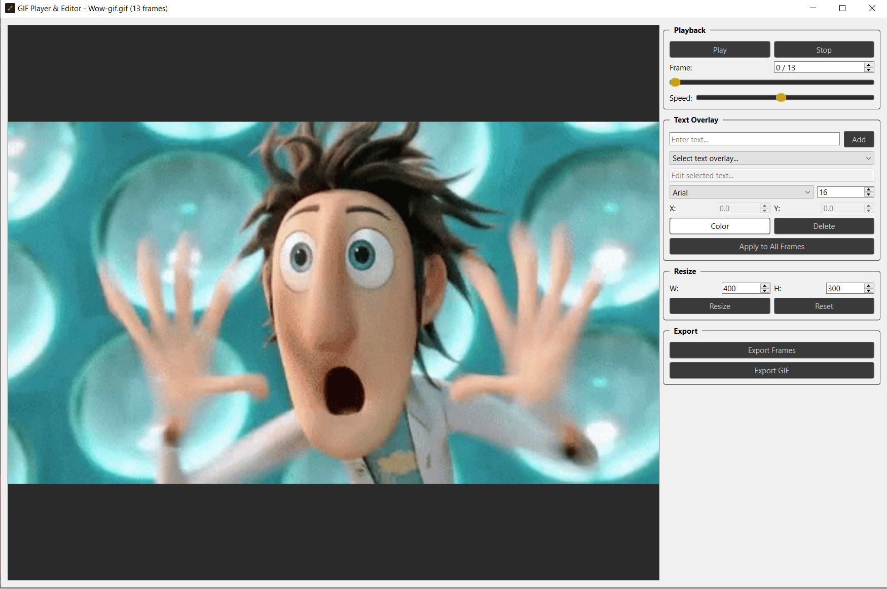
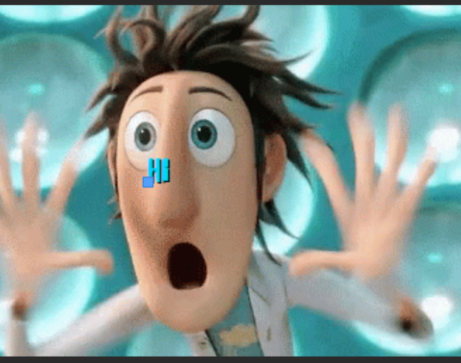

Version 2.0 • Free to Use
2D Animation,
Simplified.
A free, fast 2D animation tool with bone rigging, keyframe animation, and real-time playback.

A free, fast 2D animation tool with bone rigging, keyframe animation, and real-time playback.
Built-in GIF player with text overlay support, frame-by-frame editing, and high-quality export with custom FPS and dithering.
Add cinematic motion blur and dynamic camera shake effects to your animations. Adjustable intensity for both.
Import audio files to sync your animations with sound. Perfect for lip-sync and timing.
Full undo/redo support for all operations. Never lose your work with comprehensive history tracking.
Create skeletal rigs with parent-child bone hierarchies. Bones auto-snap when placed near each other.
Set keyframes for position, rotation, and scale with smooth interpolation and multiple easing curves.
Preview your animations at customizable FPS with play, pause, stop, and loop controls.
Separate Move, Rotate, and Scale gizmos just like 3ds Max and Blender. Precise control over every transform.
Organize your sprites and elements with a layer panel. Add, delete, rename, and toggle visibility.
Export as MP4 video, PNG sequence, or GIF with customizable quality settings. Ready for your game, social media, or portfolio.
Save your work as .vaf project files. Pick up right where you left off with full project state preservation.
Import PNG, JPG, WebP, SVG, and more. Bind sprites to bones for character animation with automatic binding.



Free forever. No account required. No strings attached.